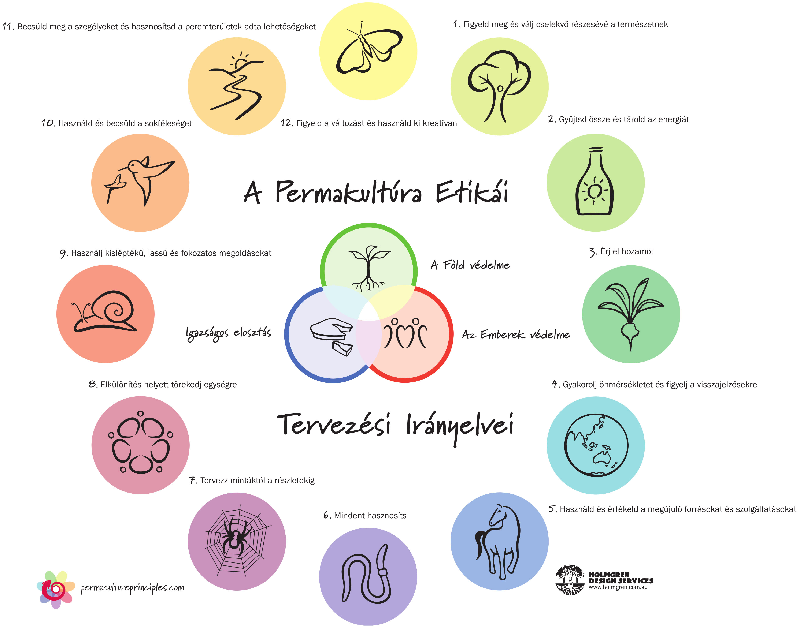

A permakultúra a biogazdálkodással rokon rendszer, amelyben a természetben zajló ökológiai folyamatokat és kapcsolatokat vesszük mintául. Olyan produktív ökoszisztéma, amely fenntartható módon képes élelmet, energiát, és élőhelyet biztosítani az ott élők számára.
A Föld(bioszféra)védelme: Ki-ki gondolkodjon el, hogyan tudna életén, gazdálkodásán, fogyasztási szokásain úgy változtatni, hogy élete során közvetve-közvetlenül kevésbé károsítsa a természetet. Hogyan tudja jobbá tenni a környezetében a haszon-és vadon élő lények életét. (Visszautalnék a tyúk példára)
Az emberek védelme: Hogyan tudjuk jobbá emberibbé tenni a környezetünkben élő emberek életét. Mit tehetünk a helyi és globális társadalmi igazságtalanságok enyhítésére? Támogassuk egymást abban, hogy életmódunkat olymódon változtassuk meg, hogy az ne ártson magunknak, és a világnak. Fejlesztjük a kommunikációs készségünket, olyan közösségeket hozunk létre amelyek valódi emberi igényeket elégítenek ki, biztosítva mindenki számára az értelmes munkát, és a pihenést.
A javak igazságos elosztása: Ez egyrészt azt jelenti, hogy tudomásul vesszük, hogy a Föld javai nem végtelenek. Nemet kell mondanunk a bennünk élő szerzési vágynak. Tudomásul kell vennünk, hogy a nyugati fogyasztói társadalmak fenntarthatatlanok. Csökkenteni kell fogyasztásunkat, nem az anyagi javak tesznek boldoggá. Osszuk meg a fölöslegeinket egymással. Ez lehet egy közösségen belüli “csere-bere” kapcsolat. De nem csak anyagi dolgokat cserélhetünk egymással, cserealap lehet a tudás, információ, valamely szakértelem.
Modernkori gyakorlati úttörőjének Sepp Holzer ausztriai gazdálkodót tartják, aki a saját gazdaságát az 1960-as években szervezte meg ezen elvek alapján. Az elméleti alapokat pedig két ausztrál, Bill Mollison és David Holmgren, valamint munkatársaik fektették le az 1970-es évek folyamán egy sor publikációjukban.
A kertben a víz az egyik legfontosabb erőforrás. Az esővíz összegyűjtésével és felhasználásával jelentős költségeket takaríthatunk meg. A kalkulátor segítségével kiszámolhatjuk, hogy adott tetőfelülethez és éves csapadékmennyiséghez, milyen méretű tartályt kell telepítenünk.
Magyarországon az alföldi régióban 600 mm körüli az éves csapadékmennyiség!
Források: Wikipédia
{kind=link}